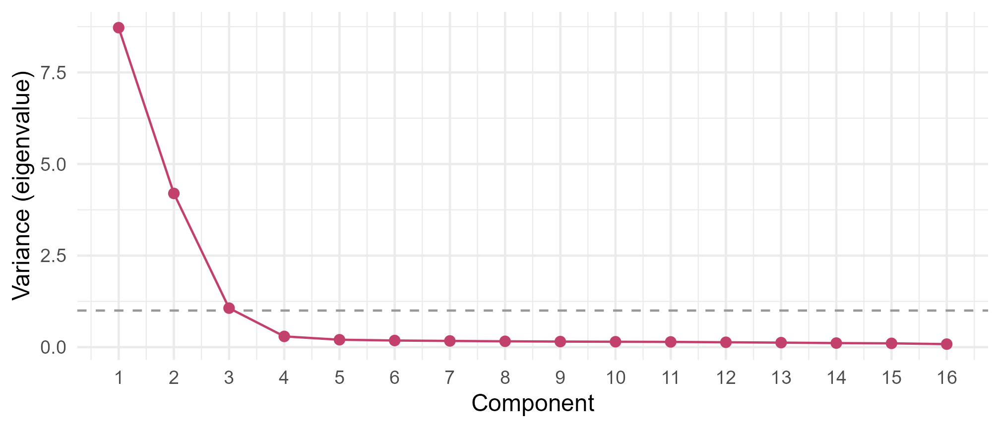
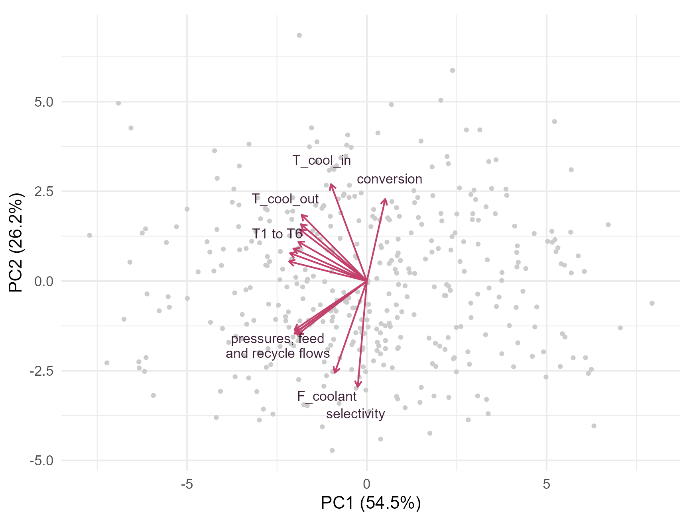
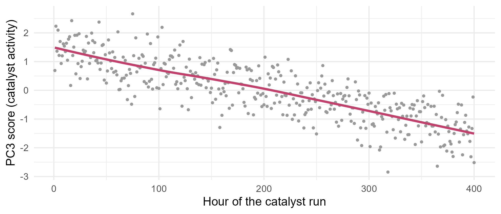

Module 7 · Lesson 12 of 14 Week 115 of 160 About 5–7 hours
Principal components analysis
Sixteen sensors, three stories
A tubular reactor has 16 sensors, but they don’t move independently. Find the few directions that carry most of their variation with principal components analysis: by hand from the eigenvalues, then with prcomp(). Read the loadings as process stories (throughput, coolant temperature, and a catalyst that’s slowly dying), see what happens if you forget to standardize, and use the components for regression on the NIR spectra, where they match ridge regression and reveal a weakness.
Every lesson so far has been supervised: a response to predict. The last two lessons of this module are about unsupervised learning, where there’s no response, only a set of variables and a question about their structure.
A tubular reactor’s control room shows 16 sensors: six temperatures along the tube, the inlet and outlet pressures and the pressure drop, the feed, recycle and coolant flows, the coolant’s inlet and outlet temperatures, and two online analyzers for conversion and selectivity. reactor_sensors.csv has 400 hourly snapshots of all 16, from one catalyst run. An operator watching 16 trends is watching far fewer independent things than that, because the sensors move together: more feed raises the flows, the pressures and the temperatures at once. Principal components analysis (PCA) finds the few directions in which the 16 sensors really vary, and the result is often a short list of things an engineer can name.
PCA is how plants monitor hundreds of sensors with a handful of charts. And sometimes it finds something in the data that nobody was looking for, as you’ll see.
In this lesson you’ll:
- find principal components by hand, from the eigenvalues and eigenvectors of the correlation matrix
- use
prcomp(), and choose how many components to keep with a scree plot - interpret the loadings and the scores, and read a biplot
- see why PCA usually needs standardized variables
- use principal components regression on the NIR spectra, and see its weakness
Directions of maximum variance
The first principal component is the direction in the 16-dimensional space of the (standardized) sensors along which the snapshots vary the most: the linear combination
z_1 = \phi_{11} x_1 + \phi_{21} x_2 + \cdots + \phi_{p1} x_p, \qquad \sum_j \phi_{j1}^2 = 1,
with the largest variance. The \phi_{j1} are its loadings, and the values z_{i1} for each snapshot are its scores. The second component is the direction of largest variance that’s uncorrelated with the first, and so on, up to p components. Together they’re just a rotation of the original axes, but ordered so that the first few carry as much of the variation as possible. Module 3 used the same mathematics for multivariate normal data.
The setup code reads the 400 snapshots into the matrix R (one column per sensor), and the spectra from Lessons 7 and 8.
Your turn. How many of the 120 pairs of sensors have a correlation stronger than 0.5 in size?
Compare the absolute correlations with 0.5.
r <- cor(R)
sum(abs(r[upper.tri(r)]) > 0.5)67 of the 120 pairs. upper.tri(r) picks each pair once, leaving out the diagonal. With that much correlation, 16 sensors can’t be carrying 16 independent pieces of information.
The components come from the eigendecomposition of the correlation matrix (the covariance matrix of the standardized sensors). The eigenvectors are the loadings, and each eigenvalue is the variance of that component’s scores. The eigenvalues add up to p = 16, the total variance of 16 standardized variables, so each one divided by 16 is that component’s proportion of variance explained.
Your turn. Find the eigenvalues of the correlation matrix, and the proportion of the variance that each of the first four components explains.
Divide by the sum of all the eigenvalues, sum(ev), which is 16.
ev <- eigen(cor(R))$values
round(ev, 3)
round(ev[1:4] / sum(ev), 4)The eigenvalues are 8.72, 4.20 and 1.07, then a sudden drop to 0.29, and the other twelve are between 0.08 and 0.21. The first component explains 54.5% of the variation, the second 26.2%, the third 6.7%, and the fourth only 1.8%. Three components carry 87% of what 16 sensors say. The small eigenvalues are each sensor’s own noise.
prcomp() and the scree plot
prcomp(x, scale. = TRUE) standardizes the variables and does the same calculation, more accurately, with the singular value decomposition. It returns the loadings in rotation, the scores in x, and the components’ standard deviations in sdev (the square roots of the eigenvalues).
Your turn. Run prcomp() on the standardized sensors, and find the cumulative proportion of variance explained by the first five components.
Standardize: scale. = TRUE.
pca <- prcomp(R, scale. = TRUE)
summary(pca)$importance["Cumulative Proportion", 1:5]0.545, 0.807, 0.874, 0.892 and 0.905. The third component adds 6.7%, the fourth and fifth less than 2% each. How many to keep is a judgment, and three common rules agree here: the elbow of the scree plot (below), where the eigenvalues flatten out, is after the third; the Kaiser rule (keep components with eigenvalues above 1, the variance of a single standardized sensor) keeps three; and three components pass a typical 85% target.
ggplot(data.frame(k = 1:16, ev = pca$sdev^2), aes(k, ev)) +
geom_hline(yintercept = 1, linetype = "dashed", color = "grey60") +
geom_line(color = "#C2416C") + geom_point(color = "#C2416C", size = 2) +
scale_x_continuous(breaks = 1:16) +
labs(x = "Component", y = "Variance (eigenvalue)") + theme_minimal(base_size = 12)
Reading the components
A component means what its loadings say. In the biplot below, each arrow is a sensor’s loadings on the first two components, and each point is a snapshot’s scores:
sc <- as.data.frame(pca$x[, 1:2]); ld <- as.data.frame(pca$rotation[, 1:2] * 7); ld$sensor <- rownames(ld)
bundle <- c("P_in", "P_out", "dP", "F_feed", "F_recycle"); temps <- paste0("T", 1:6)
lab <- ld[!(ld$sensor %in% c(bundle, temps)), ]
lab <- rbind(lab, data.frame(PC1 = mean(ld[bundle, 1]), PC2 = mean(ld[bundle, 2]), sensor = "pressures, feed\nand recycle flows"),
data.frame(PC1 = mean(ld[temps, 1]), PC2 = mean(ld[temps, 2]), sensor = "T1 to T6"))
ggplot(sc, aes(PC1, PC2)) + geom_point(color = "grey80", size = 0.8) +
geom_segment(data = ld, aes(x = 0, y = 0, xend = PC1, yend = PC2), color = "#C2416C",
arrow = arrow(length = unit(0.15, "cm"))) +
geom_text(data = lab, aes(x = PC1 * 1.25, y = PC2 * 1.25, label = sensor), size = 3, color = "#3A1F35", lineheight = 0.9) +
coord_equal() + labs(x = "PC1 (54.5%)", y = "PC2 (26.2%)") + theme_minimal(base_size = 11)
PC1 has negative loadings, of similar size, on almost everything: the pressures, the flows and the temperatures all rise together. It’s throughput: when the plant pushes more feed through, everything goes up. (The sign is arbitrary; flipping every loading and score describes the same component.) PC2 contrasts the coolant temperatures, which load positively, with the flows and pressures: it’s the coolant temperature, which heats the whole tube when it rises, independently of the throughput. What’s PC3?
Your turn. List PC3’s loadings, sorted by size.
The third column of the loadings: pca$rotation[, 3].
pca <- prcomp(R, scale. = TRUE)
l3 <- pca$rotation[, 3]
round(l3[order(abs(l3), decreasing = TRUE)], 3)The largest loadings are the conversion (+0.61), the coolant flow (+0.43), the last tube temperature, T6 (-0.37), and the coolant inlet temperature (-0.32), with the first temperatures, T1 to T3, positive and the last ones negative. High PC3 means high conversion with the heat released early in the tube; low PC3 means lower conversion, with the reaction smeared further down the tube. To a reaction engineer, that pattern means catalyst activity.
Your turn. If PC3 is catalyst activity, it should decline over the run. Find the correlation between each of the first three components’ scores and the snapshot number (time).
Time is the column snapshot.
pca <- prcomp(R, scale. = TRUE)
cor(pca$x[, 1:3], rs$snapshot)0.11 for PC1, -0.01 for PC2 and -0.82 for PC3. Throughput and coolant temperature come and go with the plant’s schedule, but PC3 falls steadily through the run: the catalyst is deactivating. No single sensor shows this clearly, because each is dominated by throughput and coolant changes, but a weighted combination of all 16 does. That’s the most useful thing PCA does in a plant: it separates the things that are driven on purpose from the ones that drift.
ggplot(data.frame(t = rs$snapshot, pc3 = pca$x[, 3]), aes(t, pc3)) +
geom_point(color = "grey60", size = 0.8) + geom_smooth(method = "loess", se = FALSE, color = "#C2416C", formula = y ~ x) +
labs(x = "Hour of the catalyst run", y = "PC3 score (catalyst activity)") + theme_minimal(base_size = 12)
NoteGo deeper: PCA for process monitoring
Multivariate statistical process control uses PCA routinely. Fit the components to a period of normal operation, keep k of them, and monitor two statistics for every new snapshot: Hotelling’s T^2 on the k scores (Module 3’s statistical distance, within the model’s plane), which flags unusual but consistent combinations, like an extreme throughput; and the squared prediction error (SPE, or Q), the squared distance from the snapshot to the plane, which flags combinations the model has never seen, like a sensor that stops agreeing with its neighbors. Two charts replace sixteen. MacGregor and Kourti’s “Statistical process control of multivariate processes” (Control Engineering Practice 3(3), 1995) introduced the method to chemical engineers, and Challenge 1 computes the ingredient of the SPE.
Standardize, or not?
PCA finds directions of maximum variance, and variance depends on units. The coolant flow is in tonnes per hour, with an SD of 13.4; the pressure drop is in bar, with an SD of 0.15.
Your turn. Run PCA without standardizing, and find the proportion of variance of the first component and its largest loading.
Don’t standardize: scale. = FALSE.
raw <- prcomp(R, scale. = FALSE)
l1 <- raw$rotation[, 1]
c(prop_pc1 = summary(raw)$importance["Proportion of Variance", 1], largest_loading = l1[which.max(abs(l1))])The first component explains 64.5%, and its loading on the coolant flow is -0.94: it’s essentially the coolant flow alone, because that sensor’s numbers are the biggest. The second mixes the tube temperatures and the recycle flow, the sensors with the next-largest spreads. In raw units, PCA describes whichever sensors happen to have large numbers. Standardize unless the variables share units and their variances are comparable, as for the spectra below.
Principal components regression
Lesson 7’s ridge regression found that the NIR spectra have about five strong directions. Principal components regression (PCR) uses them directly: compute the spectra’s first M principal components, and regress the ethanol on their scores. With M chosen by cross-validation, it’s a regularized method too: instead of shrinking every direction a little, as ridge does, it keeps the first M directions whole and drops the rest. (Spectra share their units, and the absorbance’s variation carries meaning, so they’re usually left unstandardized.)
Your turn. Cross-validate PCR on the 80 calibration samples, for M = 1 to 12 components. The PCA must be refitted inside each fold, to avoid leakage.
Use the fitted regression’s coefficients: coef(fit).
Xt <- X[train, ]; yt <- y[train]
set.seed(7121)
fold <- sample(rep(1:10, length.out = 80))
cv_pcr <- sapply(1:12, function(M) {
err <- numeric(80)
for (j in 1:10) {
tr <- fold != j
pc <- prcomp(Xt[tr, ])
fit <- lm(yt[tr] ~ pc$x[, 1:M, drop = FALSE])
new_scores <- predict(pc, Xt[!tr, , drop = FALSE])[, 1:M, drop = FALSE]
err[!tr] <- yt[!tr] - cbind(1, new_scores) %*% coef(fit)
}
sqrt(mean(err^2))
})
round(cv_pcr, 3)
which.min(cv_pcr)5 components, with a CV RMSE of 0.371. The curve drops sharply: 5.4 with one component, 3.3 with two or three, 0.92 with four, then 0.37 with five, and flat after that. Five components: the three chemicals, the baseline offset and the baseline slope. predict(pc, newdata) projects new spectra onto the training components, centering them with the training means.
Your turn. Fit PCR with 5 components to all 80 calibration samples, and find its test RMSE on the other 40.
Use the first 5 components: 1:5.
pc <- prcomp(X[train, ])
fit <- lm(y[train] ~ pc$x[, 1:5])
pred <- cbind(1, predict(pc, X[-train, ])[, 1:5]) %*% coef(fit)
sqrt(mean((y[-train] - pred)^2))0.409, as good as ridge regression (0.416) and better than the lasso (0.49). Ridge and PCR are close cousins: ridge shrinks each principal direction by d_j^2/(d_j^2 + \lambda), smoothly, and PCR shrinks the first M by nothing and the rest to zero, a hard cut-off. With five clear directions and noise beyond, both work.
Challenge round
Challenge 1 · What three components miss. Reconstruct the standardized sensors from their first three components’ scores and loadings, and find the R^2 for each sensor: the share of its variance that the three components capture. Which sensor is captured worst?
Use the same three components’ loadings: pca$rotation[, 1:3].
pca <- prcomp(R, scale. = TRUE)
Z <- scale(R)
Z_hat <- pca$x[, 1:3] %*% t(pca$rotation[, 1:3])
r2 <- 1 - colSums((Z - Z_hat)^2) / colSums(Z^2)
round(sort(r2), 3)The selectivity analyzer is captured worst, at 77%; every other sensor is between 86% and 91%. The rest of each sensor’s variance is its own noise, which no shared component explains. In process monitoring, the difference Z - \hat Z is the residual whose squared length is the SPE: if one sensor’s residual suddenly grows, that sensor has stopped agreeing with the others, which usually means it’s drifting or broken.
Challenge 2 · Variance isn’t relevance. PCR picks components by how much they vary, not by how well they predict. Find the correlation between ethanol and each of the first six principal component scores of the calibration spectra, and their proportions of variance.
Correlate with the calibration samples’ ethanol, y[train].
pc <- prcomp(X[train, ])
rbind(prop_variance = summary(pc)$importance["Proportion of Variance", 1:6],
cor_with_ethanol = as.numeric(cor(pc$x[, 1:6], y[train])))PC4 explains only 0.6% of the spectra’s variance, but its correlation with ethanol is 0.42, more than PC3’s 0.06 with 3.2% of the variance. That’s why PCR needed four or five components, and why it was poor with three. When the response’s signal sits in a low-variance direction, PCR has to keep every larger direction first. Partial least squares (PLS), the chemometricians’ standard, fixes this: it chooses directions that have both high variance and high covariance with the response. The pls package fits it in R.
Quick quiz
1. What does the first principal component maximize?
PCA is unsupervised: it never looks at a response.
2. The eigenvalues of a 16 \times 16 correlation matrix add up to what?
The total variance of 16 standardized variables. Each eigenvalue over 16 is a proportion explained.
3. Why standardize before PCA, usually?
Unstandardized, PC1 was just the coolant flow, in t/h.
4. What does the Kaiser rule keep?
Here it kept three, in agreement with the elbow.
5. PC3’s scores fell steadily over the run. What did that reveal?
No single sensor showed it clearly; a weighted combination did.
6. What’s the main weakness of principal components regression?
Partial least squares chooses directions that also covary with the response.
Wrap-up
You can now find, read and use the main directions of variation in many correlated variables. Here’s what you’ve learned:
- Principal components are uncorrelated combinations of the variables, ordered by variance. Their loadings are the eigenvectors of the correlation matrix, and their variances its eigenvalues.
- Three components carried 87% of the 16 sensors’ variation, by the elbow, the Kaiser rule and the 85% rule alike.
- Interpreting loadings named them: throughput, coolant temperature, and catalyst activity, whose scores fell through the run (correlation with time -0.82).
- Standardize variables in different units, or the largest numbers take over.
- PCR with 5 components predicted ethanol with a test RMSE of 0.409, as well as ridge. But PCA ignores the response, so a relevant low-variance direction can be missed.
TipPractice in RStudio (optional, about an hour)
Download reactor_sensors.csv and nir_spectra.csv into your project’s data-raw/ folder.
- The built-in biplot.
biplot(prcomp(R, scale. = TRUE)). Then tryfactoextra::fviz_pca_biplot(), if you install factoextra. - A monitoring chart. Fit PCA on the first 200 snapshots only. Compute Hotelling’s T^2 for the 3 scores, and the SPE, for all 400, and plot both over time. What happens as the catalyst ages?
- Partial least squares. Install pls, and fit
plsr(ethanol_pct ~ ., ncomp = 10, data = ..., validation = "CV")to the calibration spectra. How many components does it need, compared with PCR? - Loadings as spectra. Plot the first five loading vectors of the spectra against the wavelength. Which one looks like ethanol’s spectrum?
NoteKey words from this lesson
- Principal components analysis (PCA)
- Finding uncorrelated linear combinations of the variables, ordered by how much variance each explains.
- Loadings
- The weights \phi_{jm} that define each component; the eigenvectors of the correlation (or covariance) matrix.
- Scores
- The values of the components for each observation.
- Proportion of variance explained
- A component’s variance divided by the total variance.
- Scree plot
- A plot of the components’ variances against their number, used to choose how many to keep.
- Biplot
- A plot of the observations’ scores and the variables’ loadings on the same axes.
- Principal components regression (PCR)
- Regressing the response on the first M principal component scores.
- Partial least squares (PLS)
- A regression method that chooses directions with high covariance with the response, rather than high variance alone.
NoteWant to read more?
- James, Witten, Hastie and Tibshirani, An Introduction to Statistical Learning (2nd edition), section 12.2, “Principal Components Analysis”, and section 6.3, on PCR and PLS.
- Ian Jolliffe and Jorge Cadima, “Principal component analysis: a review and recent developments”, Philosophical Transactions of the Royal Society A 374, 2016, doi:10.1098/rsta.2015.0202. A short, readable review.
- John MacGregor and Theodora Kourti, “Statistical process control of multivariate processes”, Control Engineering Practice 3(3), 1995, doi:10.1016/0967-0661(95)00014-L. PCA for monitoring chemical plants.